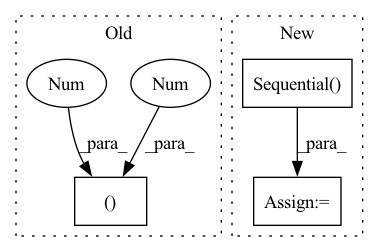

Pattern ID :18610

Before Change
self.acti2 = torch.nn.LeakyReLU()
self.drop2 = torch.nn.Dropout(0.2)
self.pool2 = torch.nn.MaxPool2d(2)
self.conv3 = torch.nn.Conv2d(1, 1, (50, 50))
self.acti3 = torch.nn.LeakyReLU()
self.drop3 = torch.nn.Dropout(0.2)
self.encoder = torch.nn.Sequential(self.conv1, self.acti1, self.drop1, self.pool1,
After Change
self.acti3 = torch.nn.LeakyReLU()
self.drop3 = torch.nn.Dropout2d(0.2)
self.encoder_fine = torch.nn.Sequential(self.conv1, self.acti1, self.drop1, self.pool1)
self.encoder_medium = torch.nn.Sequential(self.conv2, self.acti2, self.drop2, self.pool2)
self.encoder_coarse = torch.nn.Sequential(self.conv3, self.acti3, self.drop3)
self.channel_reducer_1 = torch.nn.Conv2d(in_channels=10, out_channels=1, kernel_size=1)
self.channel_reducer_2 = torch.nn.Conv2d(in_channels=10, out_channels=1, kernel_size=1)
In pattern: SUPERPATTERN
Frequency: 3
Non-data size: 3
Instances
Fragment ID: 60757727
Project Name: digitalphonetics/ims-toucan
Commit Name: e00821e875c1dc3913edb61b7869c7bdc2a36dfa
Time: 2021-02-12
Author: florian.lux@ims.uni-stuttgart.de
File Name: SpeakerEmbedding/SiameseSpeakerEmbedding.py
M Class Name: SiameseSpeakerEmbedding
N Class Name: SiameseSpeakerEmbedding
M Method Name: __init__(1)
N Method Name: __init__(1)
M Parent Class: torch.nn.Module
N Parent Class: torch.nn.Module
M File Name: SpeakerEmbedding/SiameseSpeakerEmbedding.py
N File Name: SpeakerEmbedding/SiameseSpeakerEmbedding.py
M Start Line: 13
M End Line: 26
N Start Line: 13
N End Line: 30
'>
Before Change
SqueezeExcitation(embed_dim, embed_dim // 4),
nn.Conv2d(embed_dim, embed_dim, 1)
)
self.layer_scale = nn.Parameter(torch.ones((embed_dim,1,1)) * layer_scale_init)
self.drop_path = StochasticDepth(drop_path, "row") if drop_path > 0 else nn.Identity()
def forward(self, x: torch.Tensor):
After Change
if norm_type == "ln":
// LayerNorm version. Primary format is (N, H, W, C)
// follow this approach https://github.com/pytorch/vision/blob/main/torchvision/models/convnext.py
self.layers = nn.Sequential(
nn.LayerNorm(embed_dim),
nn.Linear(embed_dim, embed_dim),
nn.GELU(),
Permute(0, 3, 1, 2), // (N, H, W, C) -> (N, C, H, W)
nn.Conv2d(embed_dim, embed_dim, 3, padding=1, groups=embed_dim), // dw-conv
nn.GELU(),
SqueezeExcitation(embed_dim, embed_dim // 4),
Permute(0, 2, 3, 1), // (N, C, H, W) -> (N, H, W, C)
nn.Linear(embed_dim, embed_dim)
)
self.layer_scale = nn.Parameter(torch.ones(embed_dim) * layer_scale_init)
else:
// BatchNorm version. Primary format is (N, C, H, W)
'>
Fragment ID: 60757726
Project Name: gau-nernst/vision-toolbox
Commit Name: 9c33936b15da329b7d51d981196aca20d5e00077
Time: 2022-03-04
Author: gau.nernst@yahoo.com.sg
File Name: vision_toolbox/backbones/patchconvnet.py
M Class Name: PatchConvBlock
N Class Name: PatchConvBlock
M Method Name: __init__(5)
N Method Name: __init__(4)
M Parent Class: nn.Module
N Parent Class: nn.Module
M File Name: vision_toolbox/backbones/patchconvnet.py
N File Name: vision_toolbox/backbones/patchconvnet.py
M Start Line: 77
M End Line: 89
N Start Line: 77
N End Line: 109
'>
Before Change
nn.Conv2d(64, 256, (3, 3), (1, 1), (1, 1)),
nn.PixelShuffle(2),
nn.PReLU(),
nn.Conv2d(64, 256, (3, 3), (1, 1), (1, 1)),
nn.PixelShuffle(2),
nn.PReLU(),
)
After Change
upsampling = []
for _ in range(2):
upsampling.append(UpsampleBlock(64))
self.upsampling = nn.Sequential(*upsampling)
// Output layer.
self.conv_block3 = nn.Conv2d(64, 3, (9, 9), (1, 1), (4, 4))
'>
Fragment ID: 60757724
Project Name: lornatang/srgan-pytorch
Commit Name: 2c11f14c44490604941be00d7661b19ad8f96597
Time: 2022-02-14
Author: liuchangyu1111@gmail.com
File Name: model.py
M Class Name: Generator
N Class Name: Generator
M Method Name: __init__(1)
N Method Name: __init__(1)
M Parent Class: nn.Module
N Parent Class: nn.Module
M File Name: model.py
N File Name: model.py
M Start Line: 127
M End Line: 134
N Start Line: 143
N End Line: 146